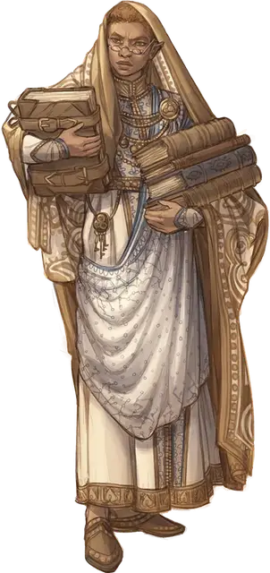

Верховный куратор монастыря
Monastic High Curator
Маленький или Средний Гуманоид (Монах, Волшебник), любое мировоззрение

Класс Доспеха 19 (защита без доспехов)
Хиты 130 (20к8 + 40)
Скорость 60 футов
| мод | спас | ||
|---|---|---|---|
| СИЛ | 12 | +1 | +1 |
| ЛОВ | 16 | +3 | +7 |
| ТЕЛ | 14 | +2 | +2 |
| мод | спас | ||
|---|---|---|---|
| ИНТ | 18 | +4 | +4 |
| МДР | 22 | +6 | +10 |
| ХАР | 17 | +3 | +3 |
Навыки Восприятие +10, История +8, Магия +8, Расследование +8
Сопротивление урону психическая энергия
Иммунитет к состояниям очарование
Чувства слепое зрение 30 футов, пассивное Восприятие 20
Языки Общий
Опасность 10 (5900 опыта)
Бонус мастерства +4
Особенности
Языки. Знает Общий и ещё четыре языка.
Защита без доспехов. Пока верховный куратор не носит ни доспехи, ни щит, к КД прибавляется его модификатор Мудрости.
Действия
Мультиатака. Верховный куратор совершает три атаки Силовым ударом и использует Ожог мозга (если доступно).
Силовой удар. . Рукопашная или Дальнобойная атака заклинанием: +10 к попаданию, досягаемость 5 футов или дистанция 10 футов, одна цель. Попадание: 17 (2к10 + 6) урона силовым полем.
Ожог мозга (Перезарядка 4–6). Верховный куратор нацеливается на двух существ, которых он может видеть в пределах 30 футов. Каждая цель должна совершить спасбросок Телосложения Сл 18. При провале цель получает 28 (8к6) урона психической энергией и не может совершать реакции до начала следующего хода. При успехе цель получает половину этого урона и не страдает от иных эффектов.
Использование заклинаний. Верховный куратор может накладывать следующие заклинания, используя Мудрость в качестве базовой характеристики (Сл спасброска от заклинания 18):
• Неограниченно: обнаружение магии [detect magic];
• 2/день каждое: обнаружение мыслей [detect thoughts], опознание [identify] (накладывается действием), наблюдение [scrying] (накладывается действием).
Описание
Верховный кураторы собирают знания и распространяют правду. Они разгадывают таинственные секреты и шпионят за членами других властных структур, чтобы манипулировать ими или дестабилизировать их, а также предоставляют угнетённым возможности избежать своего тяжелого положения. Верховные кураторы посвящены в глубочайшие секреты своих организаций и в деятельность младших агентов. Их опыт позволяет им манипулировать энергией, чтобы защитить себя и лишить врагов возможности действовать.
Монахи кобальтовой души
Ученые, священники и послушники, привлеченные к проблеме постижения истины и знаний, проводят свою жизнь в поддержке Библиотеки Кобальтовой души, объединенной учением Знающей Наставницы Айюн. Кобальтовые души руководствуются главным убеждением в том, что истинная сила приходит от понимания окружающего мира. Помимо своих усилий в поиске знаний, каждое ответвление Кобальтовой души стремится разоблачать ложь, разоблачать пропаганду и бороться с коррупцией в любом обществе, которое их отделение, называемое архивом, называет домом.
Штаб-квартира Библиотеки Кобальтовой души находится в Рексентруме, столице Двендалийской империи на континенте Дикогорье. У организации есть архивы по всей Экзандрии. Анк'Харелийская ветвь Кобальтовой души базируется в Храме Наставницы. Как и многие архивы, Храм Наставницы - это одновременно и обширная библиотека, и святилище Айюн. Этим маркетским архивом руководит верховный куратор Джамиль А'Алития.